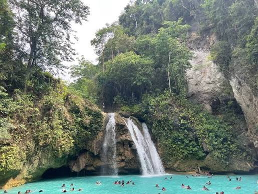
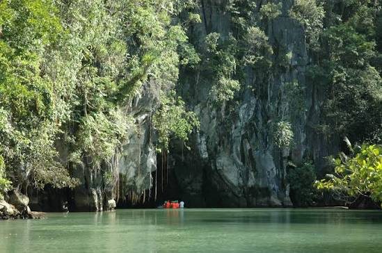
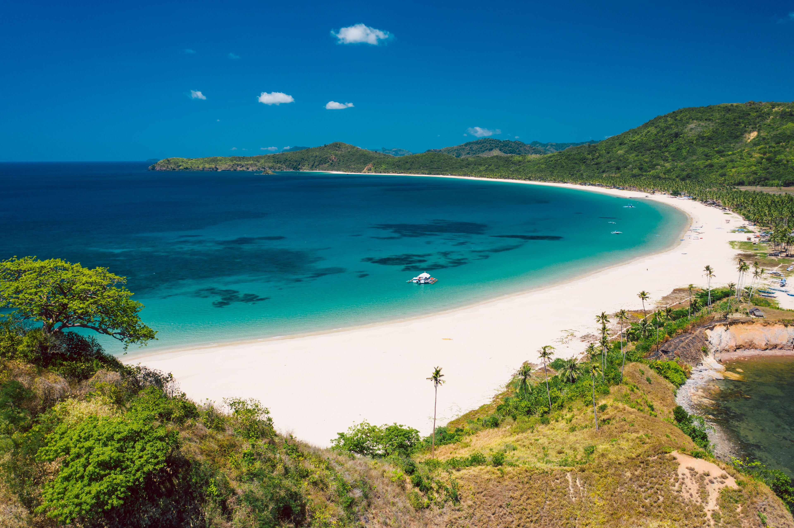

Kawasan Falls

The Kawasan Falls is a three-stage cascade of clear turquoise water from mountain springs located in the jungles of the Cebu island.
Discover five breathtaking destinations worth visiting.
The Philippines is a wonderful tropical country from South-East Asia home to beautiful tourist spots including beaches, waterfalls, and historical sites. There are many places and activities to explore this country to its observe cultural and historical influences that defines this country today.

The Kawasan Falls is a three-stage cascade of clear turquoise water from mountain springs located in the jungles of the Cebu island.

A stunning 8.2-kilometer underground river flowing through a massive cave system in Palawan, Philippines. You will see giant stalactites, stalagmites, and large cathedral chambers. The area is home to bats, swiftlets, monkeys, and old-growth forests.

A famous multi-tiered, colorful place of worship built in 1972 by the Chinese-Filipino community. Visitors can see the "81 Steps" which is a grand serpentine entrance staircase represents the 81 chapters of Taoist scriptures. Visitors can also see a replica of the Great Wall of China.

A breathtaking 4-kilometer stretch of soft cream-colored sand, lined with countless coconut palms and framed by clear turquoise waters. Famous for forming a "Twin Beach" where its coastline gracefully curves to meet neighboring Calitang Beach.

The Chocolate Hills are a unique geological formation consisting of over 1,000 cone-shaped hills that turn brown during the dry season, resembling chocolate mounds.